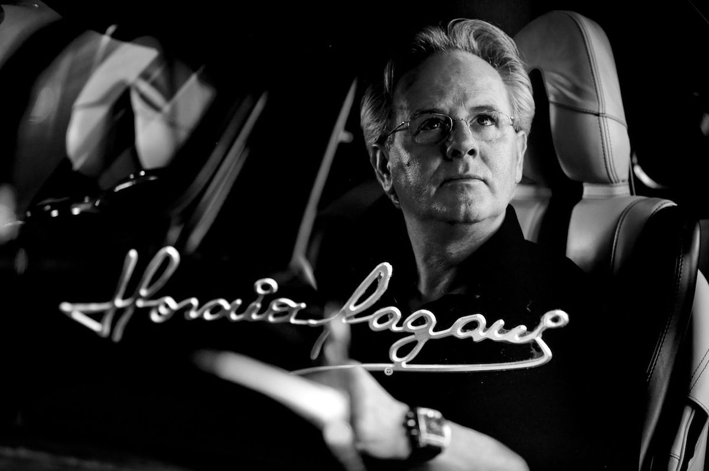

Horacio Pagani
Pagani Motors – The Legend
Pagani Automobili S.p.A., commonly known as Pagani, is an Italian hypercar manufacturer founded in 1992 by Horacio Pagani.
Based in Modena, the company was established with the vision of blending advanced engineering with artistry, treating automobiles not only as machines but also as works of art.
From the very beginning, Pagani focused on the innovative use of lightweight materials, especially carbon fiber, which became a hallmark of its identity.
The brand has always operated on a philosophy of extreme attention to detail, combining craftsmanship, science, and design to create something unique in the automotive world.
Despite competing with long-established luxury carmakers, Pagani has remained independent and family-run, producing only a limited number of vehicles each year to ensure exclusivity and quality.
Today, Pagani is recognized globally as a symbol of innovation, artistry, and engineering excellence, firmly establishing itself as one of the most prestigious hypercar brands in the world.